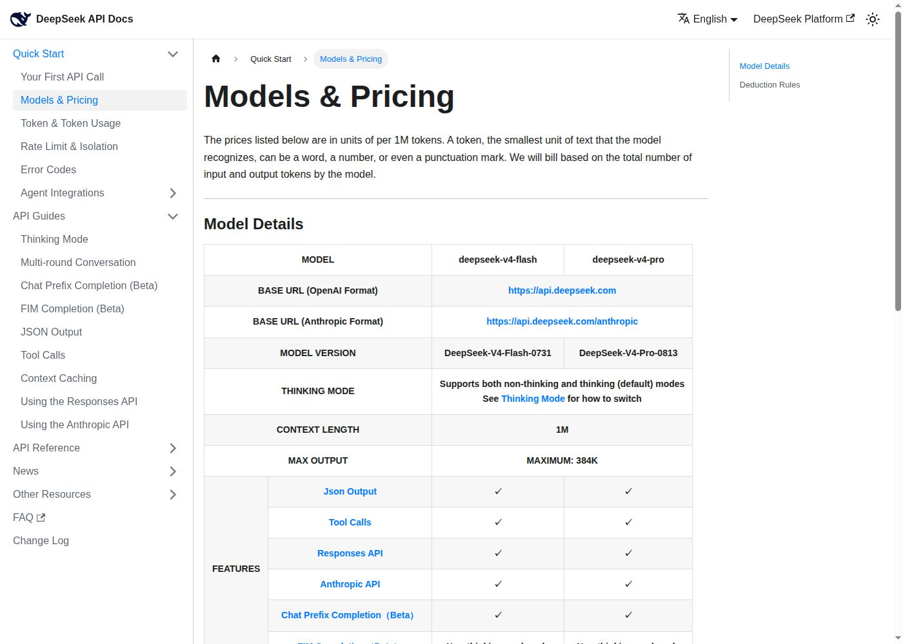

News
What is changing in the DeepSeek API, and what it does to the
cost of a call. Curated from official announcements and checked against the
live API where that is possible; the in-terminal feed is
ds docs changelog.
2026-08-16 · the repricing is liveconfirmed against a bill
It landed on schedule. At 16:00 UTC on 2026-08-16 – midnight in Beijing – DeepSeek's peak/off-peak card took effect, and the Models & Pricing page no longer carries the flat card at all: the old figures are deleted, and the footnote that used to say the new prices “take effect at 16:00 UTC on August 16” now simply describes how billing works. Both the English and Chinese editions read the same way.
| Per 1M tokens | v4-flash | v4-pro |
|---|---|---|
| input, cache hit | $0.007 / $0.014 | $0.022 / $0.044 |
| input, cache miss | $0.22 / $0.44 | $0.66 / $1.32 |
| output | $0.66 / $1.32 | $1.98 / $3.96 |
Cells read off-peak / peak. Peak hours are 01:00–04:00 and 06:00–10:00 UTC daily – 09:00–12:00 and 14:00–18:00 Beijing, seven hours a day – and every other hour is off-peak at half the peak rate. In RMB, pro is ¥0.15 / ¥4.5 / ¥13.5 off-peak and ¥0.3 / ¥9 / ¥27 at peak.
Against the flat card of 2026-08-02, off-peak / peak: pro is 6x / 12x on cached input, 1.5x / 3x on cache-miss input and 2.3x / 4.6x on output. Flash is 2.5x / 5x, 1.6x / 3.1x and 2.4x / 4.7x.
Read the increase where it actually bites
The headline “up to 3x” is the cache-miss number, and it is the least interesting one. The steep rise is on pro's cached input: 12x at peak, 6x off-peak. That is the token DeepSeek was famous for pricing at almost nothing, and it is the token an agent sends most of – every replayed system prompt, every re-sent file, every turn of a long tool loop. A pro workload built on a 99%-cache-hit prefix does not see a 3x bill; it sees something much closer to 12x. The cheapest thing on the menu went up the most.
Note that this one is pro-specific. Flash's cached input rose 2.5x off-peak and 5x at peak, so the two models' cache rates have converged: pro's cached token used to cost 1.3x flash's and now costs 3.1x it. If you were on pro mainly because replayed context was almost free there, that particular reason just got much weaker.
The cache is still the biggest lever, just a shorter one: a cached input token now costs about 1/30th of a miss, where it was 1/50th on flash and 1/120th on pro. Structuring a prompt so the stable part comes first is worth up to 30x; moving the same work off-peak is worth 2x. Do both, in that order.
We checked the bill, not just the page
A docs page can update before a billing system does, so this is measured.
On 2026-08-17, in an off-peak window, one deepseek-v4-pro call
with 188,542 cache-miss input tokens settled against a real
RMB account at 0.84 CNY – that is 4.46 CNY per 1M
against the published off-peak 4.5, where the old flat card would have made
it 3.0. Settlement lags the call by a minute or two and arrives in steps, so
poll the balance rather than reading it once.
One more detail for anyone reconciling the two cards: the USD figures are the RMB ones converted at a single rate of 6.818 (it was 6.897 before), with flash's cache-hit cell rounded down – ¥0.05 at 6.818 is $0.00733, published as $0.007.
What it changes here: nothing you have to do
The switch was encoded when it was announced and
gated on its instant, so estimates started using the new card by themselves.
ds pricing names the period you are in right now and when it
next changes; ds models prints the rate in force beside the
model list; the ledger keeps token counts
rather than dollars, so calls made either side of the flip reprice under the
card that was actually real. The embedded docs corpus has been refreshed, so
ds docs show quick_start/pricing is the new page offline.
The one habit worth adopting: stop quoting a DeepSeek price without naming the period. There is no longer a single number to quote, and the difference is a factor of two.
2026-08-13 · the price rise has its date and its numberstook effect 2026-08-16
The other shoe drops. Alongside the V4-Pro GA release, DeepSeek's Models & Pricing page now carries the repricing that the August 6 notice promised and the June peak-hour policy sketched, and this time it is dated: at 16:00 UTC on 2026-08-16 the API moves to peak/off-peak billing. Peak hours are 01:00–04:00 and 06:00–10:00 UTC daily – the boundaries are defined in UTC – at twice the off-peak rate; every other hour is off-peak.
The multiplier is the June policy's, but the base card is new and higher. Off-peak is not a discount on today's prices: a flash cache-miss input token goes from $0.14 to $0.22 per 1M in the cheapest hour, and to $0.44 in peak. The full schedule and both cards are on the pricing page, which also reads your clock and names the period you are in.
What it changes here: the switch is encoded, not guessed.
Estimates price every call with the card in force at the moment it is made
– the flat card of 2026-08-02 until the effective instant, peak/off-peak
after, never early. ds pricing prints the period in effect
right now with local, UTC and Beijing time, and the
ledger stores token counts, not dollars,
so history can be repriced under any card.
2026-08-13 · DeepSeek ships dsh, its own agent harness
DeepSeek released DeepSeek Harness:
deepseek-ai/deepseek-harness
on GitHub, @deepseek-ai/dsh on npm, dsh in the
shell, MIT. It is a developer preview and says so in capitals –
“THERE WILL BE COMPATIBILITY-BREAKING CHANGES” – and the
architecture is the pitch: everything is a plugin, on the
Cordis runtime. One
command starts it:
npx @deepseek-ai/dsh web # Web UI at http://127.0.0.1:3080The ecosystem is delegated, deliberately
The document worth reading twice is
CONTRIBUTING.md.
The official repository takes no external pull requests (“we are
sorry that we cannot accept external pull requests at the moment”),
and there is no plugin marketplace and no registry. Discovery is a GitHub
topic: tag your repository
dsh-plugin
and that is the catalogue. DeepSeek's framing of its own repo: “an
idea, an official showcase, and a source of inspiration, but not a
mandate”. The ecosystem's official badge is shields.io in the brand
blue, #4D6BFE:
dsh skills are Claude Code skills
dsh skills are SKILL.md directory bundles, the format
Anthropic's agent skills established, and the local provider reads them
from <project>/.agents/skills and
~/.agents/skills as well as its own .dsh/skills
roots. A skill already written for Claude Code drops in front of dsh
unchanged – including this
CLI's own skill, which teaches any harness to drive
deepseek for key checks, cost accounting and offline docs.
That is also the honest one-line comparison with Claude Code:
dsh is the model vendor's own harness, open source and plugin-first, with
the batteries left to the community rather than included.
Is dsh the same as deepseek-cli? No
Different layer, same API. dsh is the agent harness: it runs the loop, executes the tool calls, manages plugins and sessions, and serves a UI. deepseek-cli is the API client: it sends one request in any of DeepSeek's four wire formats, prints the response and what it cost, and carries DeepSeek's API documentation in the binary. This tool deliberately does not execute tool calls and is not becoming a harness – that line is a recorded decision, and it just got easier to hold, because the official answer to “run an agent on DeepSeek” now exists.
What it changes here: nothing in the tool. The pairing
writes itself: dsh runs the agent, and this CLI is what you reach for
underneath it – ds check when a key misbehaves,
ds tokens and the ledger to price
a workload, ds docs ask when you need the API's own text
rather than a model's memory of it.
2026-08-13 · V4-Pro in the field: what practitioners report
The launch table is DeepSeek's own. This is what
people running deepseek-v4-pro-0813 in real harnesses said in the
first day, mostly in the
Hacker News launch
thread (900+ points). It is anecdote, not measurement, but it is consistent
anecdote, and it lines up with the sober reading on the bench page.
Pro thinks less and says less than Flash
The clearest repeated observation is the split between the two models. One
reviewer running both through OpenRouter in a pi harness put it plainly: Flash
makes a lot more initial mistakes, and then has to re-check stuff, and
produces much more output compared to Pro … the output volume is often 5x
more … saying something wrong … and then ‘Wait, let me
re-check:’
before it lands on the right answer
(pixelesque). Pro
reaches the conclusion more directly. If you are paying for output tokens and
wall-clock, that difference is the argument for Pro on the hard steps and Flash
on the bounded ones, which is the route-by-role
advice from the other direction.
The benchmarks and a real task disagree, and the harness is why
The most useful counterweight was a like-for-like test: scan a repo and
produce a single docker-compose to deploy behind Caddy, with
wildcard certs provisioned outside, some ports already taken, and Postgres
built in. Run on deepseek-v4-pro-0813 and on
gpt-5.6-terra-high, the verdict was this one had few issues.
terra: none
, with the note that the gap opens up as the project stops being
simple (freakynit,
repro). The
immediate reply from another user was the load-bearing caveat:
DS V4 is harness sensitive
(scrlk). A score is a
model plus a harness, and a cheap model with a good harness (self-verification
tools, an AGENTS.md it rereads) closes a lot of the gap the raw
number shows.
The economics are the story, but only if you cache right
This is where the field agrees with the kill
line. One practitioner built a cost simulation from their own pi sessions
and found that once caching is counted, deepseek-v4-pro comes out
cheaper than gpt-5.6-luna, on the strength of the cache-read
price (taosx). The
catch, stated bluntly by another: a 50% cache-hit rate is a misconfigured
harness, an agentic loop should see 99%+, and DeepSeek's cache pricing is low
enough that you should never change history … even more so with deepseek
because their cache hit pricing is so low
(no stripping old thinking tokens,
no rewriting tool results to save context)
(p1necone). The
cache-hit lever on the cost page is only real if the
prefix actually stays put.
Read this with the date in mind. These reports were written against the flat card, when pro's cache-read price was 138x below GPT-5.6 Sol's. The 2026-08-16 repricing raised exactly that number – 6x off-peak, 12x at peak – leaving the edge at 23x/11x. The advice holds: keep the prefix stable, never rewrite history. The cost simulations that concluded pro comes out cheaper do not automatically hold, and are worth re-running.
Against the other open models
On GLM-5.2, one report from OpenCode work on an old Unix-clone codebase:
GLM ended up being far slower, and far more expensive, for approximately the
same results … There was never a problem that GLM could solve that DS
couldn't solve, faster, and significantly cheaper
, with the honest coda that
DS isn't as good as GPT or Claude … but it's fast, and pretty darned
effective
(spijdar,
who also runs a 3-bit quant locally at ~15 tok/s). Against Qwen3.8-max, released
the same day, the read was comparable capability at much lower price, with no
reason to reach for Qwen unless you need vision
(parsimo2010).
The trust question: is the endpoint even serving the real model?
One thread ties straight to the entry below. An open-weights user asked to be
able to prove to me … that this output was generated by FP8 DeepSeek V4
Pro 0813. Not some cheaper quantization
(Phemist), and others
noted they pin to a single provider for deepseek specifically. The model will
not tell you which checkpoint or precision it is, and its self-description is
worthless for it. The signals that hold up are the ones you can check without
asking it: the endpoint's model list and the docs version cell, which is exactly
the point of the rollback question below.
The bottom line from the field
It matches the bench page. V4-Pro-0813 sits in the frontier-adjacent cluster, not clear of it; a stronger closed model still lands the hardest task in fewer turns; and the reason to run it anyway is that cheap cached input makes retries, review passes and parallel workers affordable. Route by role, keep the prefix stable, and measure successful-task cost rather than the per-token price or the launch chart.
2026-08-13 · No, V4-Pro did not roll back
Ask deepseek-v4-pro what model it is and it may tell you it is
GPT-4o. A model that answers with a competitor's name looks like a swap, and
the question came up: did the 0813 GA get pulled and replaced with something
older? Short answer, no. The build behind deepseek-v4-pro is still
DeepSeek-V4-Pro-0813.
{kind=link}

The record is consistent on every side that can actually be checked. The
Models & Pricing version cell
still reads DeepSeek-V4-Pro-0813 (the page's last-modified date is 2026-08-12,
the GA day, and it has not moved since). The API still serves
deepseek-v4-pro. Third-party hosts that mirror the build, OpenRouter
and NanoGPT among them, list 0813. The change log carries no rollback. Nothing
was withdrawn.
So why does it say GPT-4o? Because a language model does not know its own
name or its training date. Asked to state its version with nothing to look at,
deepseek-v4-pro answers differently on different samples:
GPT-4o
GPT-4o
DeepSeek-V3-0324
# and flash, asked the same, answered: Qwen/Qwen2.5-7B-InstructThat is the model repeating identities from its training data, not reporting
what it was deployed as. It is not a version signal and never was, on any
model. The signal that is real is the one nobody has to imagine: the docs
version cell and the model list. ds docs show quick_start/pricing
prints that same table offline, and ds models lists what the
endpoint serves. Neither asks the model to introspect, which is exactly why the
CLI carries the documentation inside the binary: the answer to “what am I
calling” should not depend on the model's memory of itself.
2026-08-12 · V4-Pro official release (0813)
The preview is over. The
Models & Pricing page now lists
the model version as DeepSeek-V4-Pro-0813 – a quiet
table-cell change, no news post upstream. The model ID stays
deepseek-v4-pro, the specs stay 1M context and 384K max output,
and the rate card stays where it has been since 2026-08-02.

What changed is the checkpoint. Like Flash's 0731 release, the GA build is re-post-trained for agent work; DeepSeek's launch-day numbers circulating in the community put Terminal-Bench 2.1 at ~87.9 (preview: 72.1), DeepSWE at ~62.7 (preview: 12.8) and Toolathlon-Verified at ~74.1 (preview: 55.9). Jumps that size are post-training and harness work, not a new base model – and none of them are independently verified yet, so treat the preview numbers as the floor and these as the claim.
What it changes here: nothing to do. Anything already
sending deepseek-v4-pro – ds chat -m
deepseek-v4-pro, the claude-opus-* remap on the
Anthropic format – has been on the new
checkpoint since the cell changed. Same price, stronger model; the
estimates already price it correctly.
2026-08-06 · a broad price rise is comingresolved 2026-08-13
Update: this is no longer a rumour with a direction. On 2026-08-13 DeepSeek published the new card and the date: peak/off-peak billing from 2026-08-16 16:00 UTC. The entry below stands as it was written, as the record of the announcement.
DeepSeek posted a notice in the platform console: all API services will be repriced “in the near term”, and the increase is expected to be substantial. Developers are advised to plan call volume and keep top-ups sized to what they will actually use. The final schedule and the new numbers are “subject to the official announcement” – and as of this page's build there is none.
The notice appears in the console rather than on the docs site, so it is easy to miss from code. It was widely reported on 2026-08-06 Beijing time.
The same notice went out by email to API account holders the same day, bilingual and unambiguous about the direction. The email adds one thing the console banner does not: continuing to use the service after the adjustment counts as accepting it, and the offered alternative is cancelling and applying for a refund. Received and archived here as the primary source:

What it changes here: nothing, yet. The
cost page and ds models price from
the published card of 2026-08-02 until DeepSeek publishes a new one. The
ledger stores exact token counts rather
than prices, deliberately – when the card changes, every historical
call can be repriced under it.
announced 2026-06-29 · 2× during peak hoursdated 2026-08-13
Update: the date exists now, and one detail below did not survive it. The 2026-08-13 announcement keeps the 2× multiplier and the same windows but puts them on a new, higher base card – so “off-peak, the current card stands” is no longer true. Effective 2026-08-16 16:00 UTC; the pricing page has the numbers.
The pricing page has carried this since late June: the API will move to peak/off-peak pricing, with every billing item – input, cached input, output – costing 2× the regular price during peak hours. Off-peak, the current card stands.
| Window | Beijing (UTC+8) | UTC | Multiplier |
|---|---|---|---|
| peak | 09:00–12:00 | 01:00–04:00 | 2× |
| peak | 14:00–18:00 | 06:00–10:00 | 2× |
| off-peak | everything else | everything else | 1× |
The effective date is still “subject to the official announcement”. This CLI deliberately does not apply the multiplier to its estimates before that date exists – doubling every figure on a guess would be inventing data. The day it is real, the ledger's stored token counts make the switch a repricing, not a migration.
Two practical notes. First, the context cache discount is 50×; the peak multiplier is 2×. Prompt structure will still dominate your bill. Second, if batch work can move, move it – the off-peak window covers the whole European and American working day.
2026-07-31 · V4-Flash official release
The official DeepSeek-V4-Flash API entered public beta: same model name, same calling convention, re-post-trained weights with substantially stronger agent behaviour – DeepSeek's published numbers have it ahead of V4-Pro-Preview on Terminal Bench, DeepSWE and the rest of the agent suite. It natively speaks the Responses format and is explicitly adapted for Codex. The official V4-Pro release “will follow soon”.
2026-04-24 · V4 arrives, the old names leave
deepseek-v4-pro and deepseek-v4-flash became the
API's two models, served through both the OpenAI and Anthropic interfaces.
The legacy names deepseek-chat and deepseek-reasoner
were aliased to flash for a grace period and retired on
2026-07-24 – anything still sending them gets an
error, not a quiet remap.
Watching this without watching this page
This page is curated, not generated, so it carries what matters and skips what does not. The complete feed:
ds docs changelog # DeepSeek's own change log, in the terminal, offline
ds docs sync # refresh the snapshot the binary carries
ds models # the rate card the estimates use, next to the live model list
ds pricing # the time-of-day schedule and the billing period right nowUpstream: the official change log and pricing page, and status.deepseek.com for incidents.